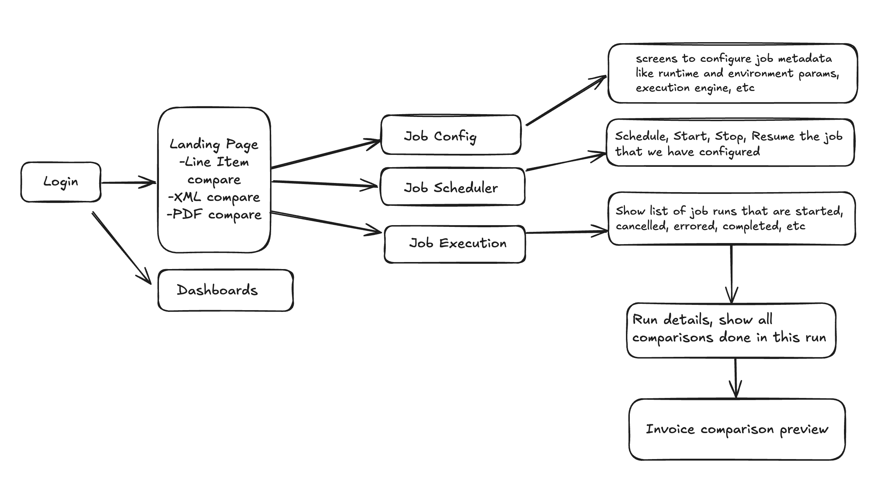
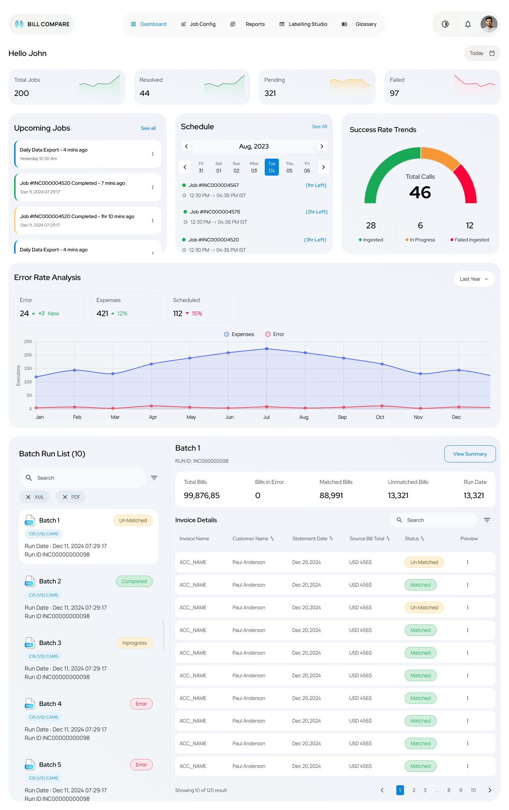
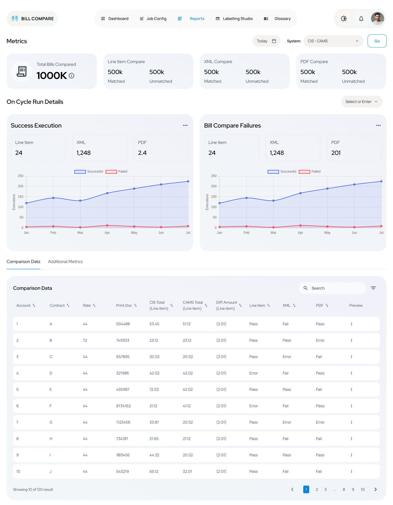
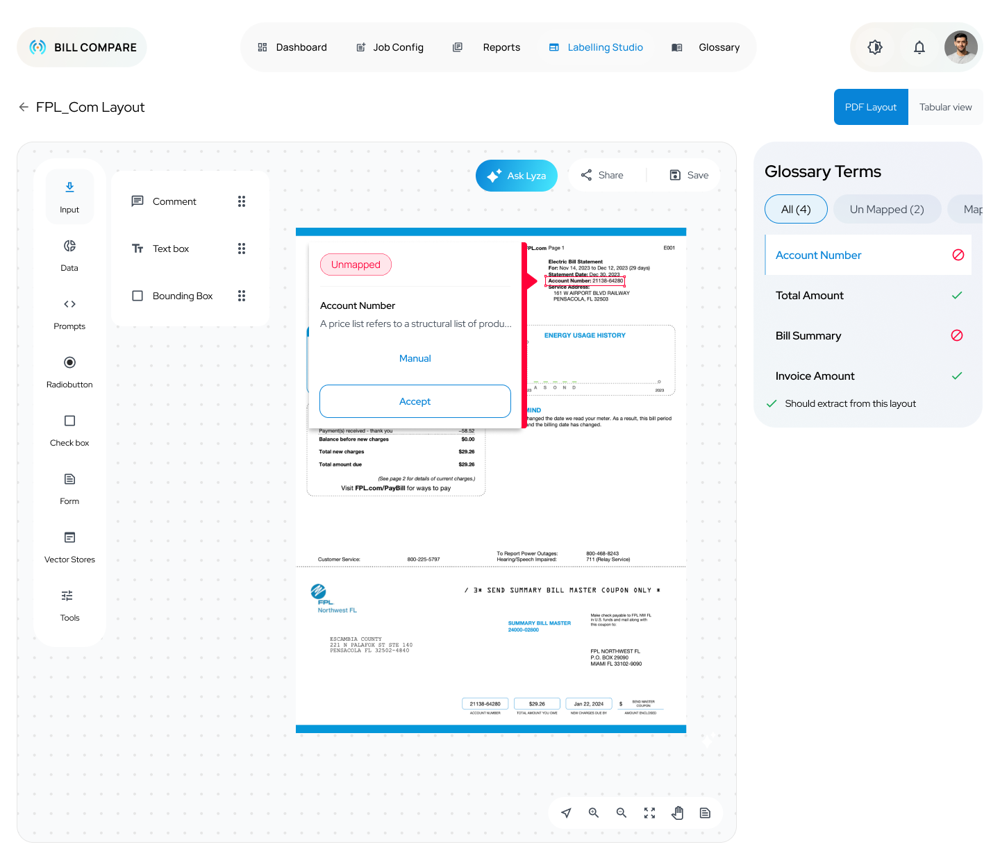
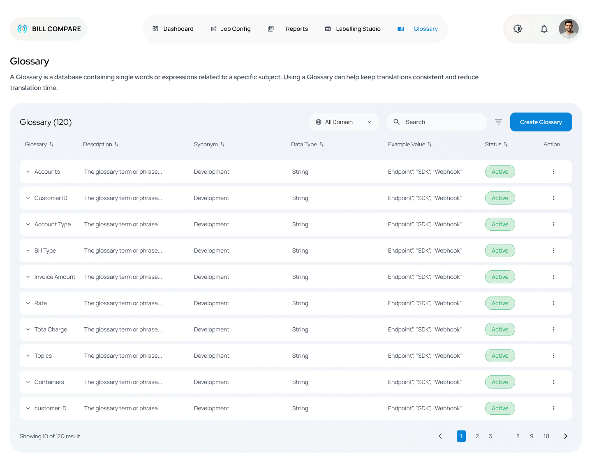
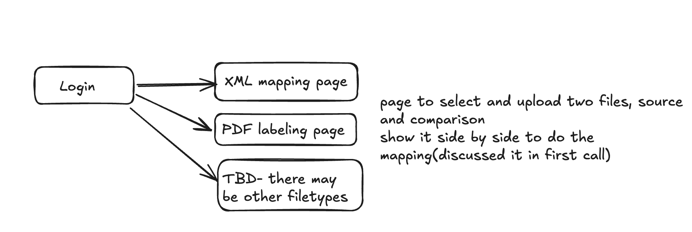

Designing a decision-support system for billion-dollar billing validation.
Reduced billing validation from 3+ days to under 4 hours across 1M+ records per cycle, for the largest utility migration in the United States.
"How do you ensure that every single bill generated by the new CAMS system matches what the legacy CIS system would have produced. at the scale of 6 million accounts?"
A single billing discrepancy could trigger regulatory violations, SOX audit failures, and erode customer trust across Florida's largest utility.
FPL is migrating its entire billing system from a 30-year-old CIS mainframe to SAP CAMS. Every billing cycle produces over a million file extracts in four incompatible formats: EBCDIC, tab-delimited, XML, and PDF. Manual cross-checking took 3+ days, was error-prone, and couldn't meet SOX audit timelines.
"This is not a comparison tool.
It's a validation confidence system."
Users don't need to see differences. They need to trust that every bill is correct, at every level, every cycle. That single reframe changed how the dashboard was structured, how the audit trail was surfaced, and why a Glossary became a first-class module instead of a tooltip.
Before sketching a single wireframe, I embedded into the domain. This wasn't a consumer app. It was enterprise infrastructure with regulatory stakes. I spent the first two weeks understanding EBCDIC file formats, XML schema validation, OCR confidence scoring, and how a SOX auditor thinks.
From "new files arrived" to "audit report ready". I mapped pain points and design opportunities at every stage so we'd design for the workflow as it actually happens, not how a spec document describes it.
New billing cycle. Extract files from CIS & CAMS arrive.
Which files? What format?
Auto-detect formats on upload
Set up comparison job: params, thresholds, tolerance.
Fear of misconfiguration
Guided setup wizard
Spark batch processing. 1M+ records per run.
No visibility during processing
Real-time progress & ETA
Review matched / unmatched / errors with drill-down.
Data overload. Can't prioritize
Severity-coded triage view
Generate audit-ready deliverables for SOX review.
Manual formatting · no history
One-click SOX export
The 4 incompatible data formats each require a different parsing strategy, but they all flow into a unified validation confidence layer. Three engines, one operator experience.
EBCDIC from CIS vs. tab-delimited from CAMS. Structured field-by-field matching via the Data Integration Hub. Validates ~1M extracts per cycle within a 2-hour SLA.
Source and target XML documents routed through DIH. Element-level matching with schema-aware validation. Surfaces schema drifts before they corrupt downstream bills.
AI-driven OCR + NLP extracts text from ~500 rendered bills per cycle. Human verification via Labelling Studio prevents automation from creating false trust.
I started with hand-drawn flow diagrams to test how the workflow would feel before investing in pixel-perfect designs. The IA went through two major revisions before landing on a six-module structure organized by frequency of use.

Hand-drawn information architecture: Login → Landing Page (Line Item / XML / PDF) → Job Config / Scheduler / Execution → Run Details → Invoice Preview → Dashboards
Real-time validation health across all 3 levels: KPIs, trends, batch run list
Core comparison engine: filtering, drill-down, severity triage
Historical data, validation rates, SOX-compliant audit exports
Human-in-the-loop annotation for AI OCR model improvement
Centralized billing-term definitions: the Rosetta Stone for CIS↔CAMS
Automated cycle management: parameters, thresholds, run scheduling
Six modules laid out left-to-right: Dashboard → Job Config → Reports → Labelling Studio → Glossary. No hunting. The nav matches how Sarah actually moves through a cycle.
Answers the first question every user has: "Is anything broken?" Success gauges and error-trend charts make the answer instant before any drill-down is needed.
Billing terminology varies between CIS and CAMS. Instead of inline tooltips, I gave terminology its own home: a single source of truth that operators & SMEs both edit.
Initially PDF labelling was buried inside Bill Compare. Separated it after discovering that the AI model training workflow belongs to a different role on the team, reducing cognitive load in the primary flow.
Two weeks embedded in the problem space: interviews, SME sessions, BRD synthesis. I mapped how EBCDIC → TAB → XML → PDF flows through CIS and CAMS before designing a single screen.
Built Sarah Mitchell from inferred data. Mapped the validation workflow. Reframed the problem from "comparison tool" to "validation confidence system". Every design decision flowed from this single insight.
Sketched the IA on paper. Built lo-fi wireframes (constructs) to rapidly test layout concepts with stakeholders before investing in pixel-perfect design. Three concept directions evaluated; unified validation hub won.
Partnered with the visual designer to build the high-fidelity surface using the existing EPM design system. Every screen at full fidelity. All states designed: empty, loading, error, partial-data. Dev-ready specs.
Weekly design reviews with engineering. Spark parameter docs. Annotated interactions. Edge cases documented. UAT feedback drove the final refinement cycles.
Six modules. One coherent operator experience. Built with the existing EPM design system; co-designed with the visual designer.

Sarah's home base. Instant answer to "is anything broken?" before any drill-down. Total jobs, received, pending, failed surfaced as live KPIs; the Success Rate gauge gives a glanceable read of cycle health.

Operations teams need both the trend (charts) and the detail (tables). The Reports module shows both, with filters to go deeper. 1000K+ total bills compared, filterable by system (CIS/CAMS), with success/failure trend lines over six months. The audit-ready data Sarah needed without spreadsheet formatting.

PDF comparison uses AI OCR, but the design keeps a human in the loop on every field. Operators annotate unstructured bills, map terms via the Glossary sidebar, and accept or override each field with a single click. This is where false trust gets prevented.

CIS and CAMS use different names for the same things. The Glossary module is the canonical translation layer. Every billing term standardized with synonyms, data type, and domain. Operators & SMEs both edit. AI models read from it. Mismatch chaos eliminated.

The first wireframe was 5 boxes on a page: Login feeding into XML mapping, PDF labeling, and "TBD other filetypes." Talking through those rough boxes with stakeholders surfaced the missing pieces (job scheduling, reporting, audit history) before any pixel was pushed.
Built on top of the existing EPM design system. Optimized for data-heavy enterprise interfaces where analysts spend 8+ hour shifts. High contrast, semantic color, monospace for data. chosen for clarity over flourish.
Sarah's team went from 3-day validation marathons to 4-hour confidence checks. Manual cross-checking for 6M accounts was eliminated. SOX audit trails are now auto-generated on every run. Projected $2.4M annual savings.
Eliminated manual cross-checking for 6M accounts. SOX audit trail auto-generated every run. Migration deadline met.
3-day marathons became 4-hour confidence checks. Historical data eliminated "starting from scratch" each cycle.
Spark-powered batch processing at scale. AI OCR bridges structured/unstructured gap. 99.97% uptime target on AWS.